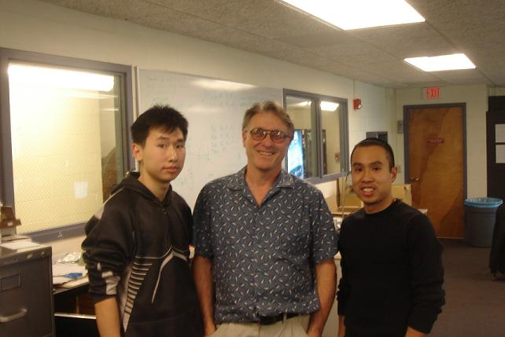

Conclusion
Our light tracking in black and white was successful. We were able to lock onto a target light source and the tracking box would follow that light source. The tracking box performed how we wanted as it would center the light source in the box and can follow a decently fast moving light source. However, the tracking box has difficulties tracking very fast light since there are limitations on the camera. The camera is not able to capture quick movements well due to the slow frame rate of the camera. Nonetheless, we accomplished mostly what we set out to complete. Given more time, we would have continued trying to implement our light source tracking with color imaging and tracking a specific color of light.
